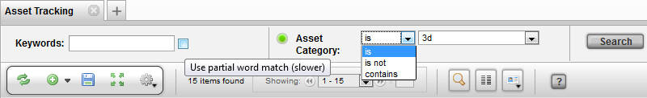
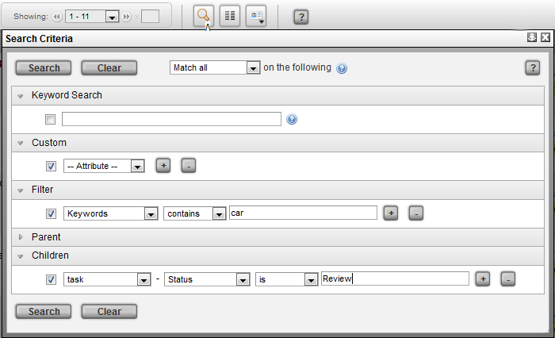
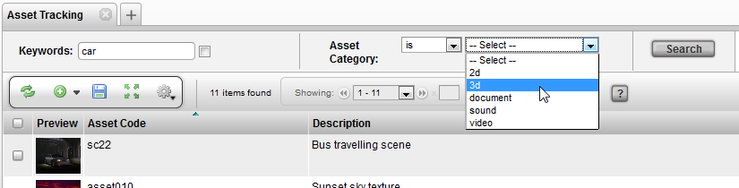
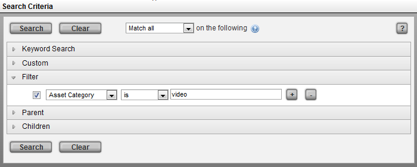
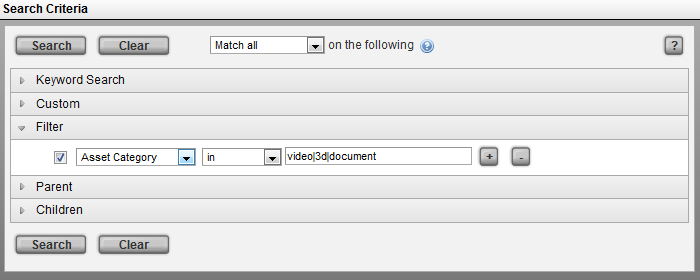
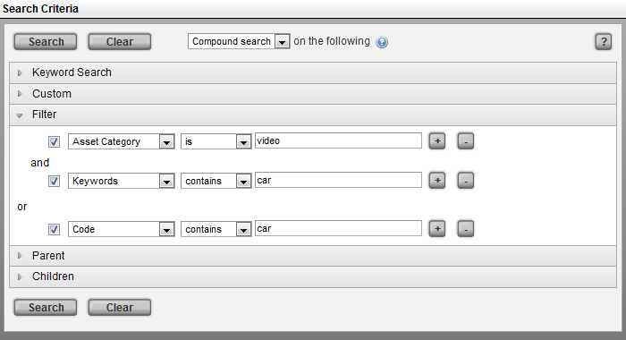
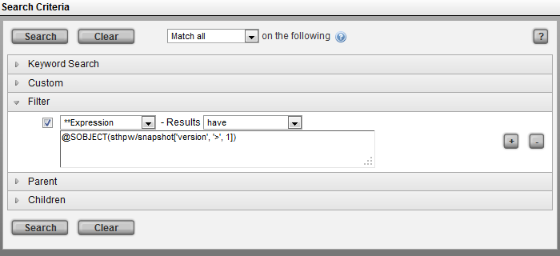

With the basis of TACTIC being data (information) storage, a large aspect of working with TACTIC is searching. When looking for items in the project, specific properties are used when conducting a search. Below are some example of typical searches in TACTIC:
- Tasks with status in review
- Find items by category
- Search by Keywords
- Tasks Due this week
- Tasks Past Due
- Work entered in the current week
- ….and more
Often times, these searches are used daily so having to fill out the search criteria could be redundant. In TACTIC, views can be saved as links in the sidebar which include the search criteria. This in turn causes the view to become a live report which is always up to date.
Searches in TACTIC are carried through 2 primary interfaces:
Simple Search
The simple search allows for a simple set of search options for a view.

For the Keywords Search, after inputting the search criteria, either hit the enter key on the keyboard or the Search button to run the search.
Partial Word Match Check Box
The check box next to the Keywords Search provides an option to find matches on words that contain the input criteria.
For example, if the search criteria is "truck" with the partial word match checked on, example results would include "truck", "dumptruck" and "loadertruck".
Otherwise, if partial word march is not checked on, the results would only include words that match the whole word: "truck".
Operators: Is / Is Not / Contains
In the above example, for the Asset Category, the first drop down provides an operator so that searches can be performed using: is, is not, contains
The last drop down menu provides a selection of possible values for the Asset Category to search against.
Search Box(Advanced Search)
The Search Box can be used to execute simple to very complex searches.

TACTIC provides two main search tools; the Simple Search and the Search Box.
Simple Search
The Simple Search provides a view specific filters. To use the simple search:
- Load a view of items in your project. In this example a Keywords field is provided and an Asset Category drop-down narrows down the search even further.
Fill in the desired search and click the search button.
 3. The results view will automatically refresh once the search is complete.
Search Box
The Search Box can be used to conduct more complex searching in TACTIC. To test a few examples, load a view of items in a project which have Tasks. In this example the view is an Asset view.
To Search for all assets with an asset category of video , in the following criteria;
Filter → "Asset Category" "is" "video"

To Search for all assets with an asset category of; video, 3d, and document, enter the following;
Filter → "Asset Category", "in", "video|3d|document"

To search all assets described in example 2 and also include tasks that are approved, enter the following;
Filter → "Asset Category", "in", "video|3d|document"
Children → "Task", "Status", "is", "Approved"

To find all tasks assigned to the user currently logged in, a simple expression can be used;
Children → "Task", "Assigned", "is", "{$LOGIN}"

To find all assets with a category of video and keyword of car or a code that contains car;
Set the top option in the drop-down box to "Compound Search";
Filter → "Asset Category", "is", "video"
and (click between the filters to activate the and/or)
Filter → "Keywords", "contains", "car"
or (shift-click between the filters to group the filters)
Filter - > "Code", "contains", "car"

To execute complex searches using an expression to find all assets which have check-ins with versions higher than 1;
Filter → "**Expression", "have", "@SOBJECT(sthpw/snapshot[version, >, 1])"
